Lega Toscana di Protezione
Seduta generale Ordinaria del 21 gennaio 1919
Lega Toscana di Protezione
Seduta generale Ordinaria del 21 gennaio 1919
Alle Ore 930 P.M. Il Presidente
M.
Simonetti dichiara la seduta aperta e dopo Lettura
Processo
Verbale il Presidente lo messe all’aprovazione
all’assemblea e viene aprovato Come e Scritto.
Si Passo ai Reso Conti
generale dopo che furono
pagati tutti i billi in Pieno resto in Cassa al
tesoriere
Bilancio Netto $484.07 Compreso Interesse $19.27
Il quale
amontare del danaro fu Consegnato al nuovo
Tesoriere
(Americo Pasquinelli)
Il Presidente M. Simonetti Essendo l’urtima
seduta che procedeva
dell’anno 1918 Fece L’istalazione della Nuova
Aministrazione
il quale Chiamo il Nuovo Presidente
Muzio Frediani
in Sieme Con il Seguito di tutta la
aministrazione
e Con Parole Augurandoci un buon successo
durante la Loro
Ocupazione Anno 1919.
Aministrazione Anno 1919
Presidente
Muzio Frediani
Vice Presidente
Stefano Maffei
Segretario Cor.
Michele Simonetti
Segretario Finanza
Santino Pasquinelli
Tesoriere
Americo Pasquinelli
Curatori
Carlo Silvione
Sam Paganucci
Eugenio Bertoni
Abramo Marsili
Ufficiali
Sanitari
Carlo Giometti
Eugenio Merciadri
Guardia Sala
Angelo Fontana
dopo Finita l'istallazione il Presidente
Muzio Frediani
dopo Messa l’assemblea in Perfetto Ordine e
nel
Massimo Silenzio pronunzio un discolzo riguardante
all’assemblea per
il Contegno che i Soci devono
tenere tanto come in Sala durante le sedute
Come
quando si trovassero fuori a Parlare con gli Amici o pure
se un
socio Si trovasse Furi per servizio riguardante
alla Lega.
Il Presidente Muzio Frediani diceva
(...) Consoci Perche la Lega Toscana Possa giungere a
grande Progresso e’
Necessario Prima di tutto avere
Rispesto in Socio Con Lartro ubidienza al Presidente
durante le Sedute avere un Contegno
Educato e
usare Sempre parole decorose durante le Sedute
diceva Anche
che tutti i Soci devono Cercare Sempre
di Fare Nuvi Aplicanti e di
Propagandare Continu-
amente il Sodalizio Toscano
terminato il discolzo
il Presidente Muzio Frediani
Veniva
Aplaudito Con Stioccate di Mano da tutta la assemblea
generale e Con grido
Bravo Frediani
Il Presidente Frediani Chiedeva il Parere
all’assemble-
a in riguardo quando Fosse Stato Necessario di
Mettere in
Vigore il Sussidio della Lega Toscana e
dopo Fatta una Lunga disculzione il Fratello
M. Simonetti Faceva la Proposta
che il Sussidio
Fosse Andato in Vigore il 1° aprile 1919
la Proposta
Vene Assecondata dal Fratello
Stefano
Maffei
Il Presidente Muzio Frediani non
avendo Altre Proposte la messe all’approvazione
All’assemblea Generale la
Proposta viene
Approvata Ad una Animita.
Veniva aperta la disculzione a riguardo al
fondo Mortuario che il
quale tutti i Soci sono
sotto a Pagamento di $200 --- che i quali
vanno
a fondo Mortuario--
dopo una Grande Disculzione il fratello
Stefano Maffei
faceva la Proposta che i
$200 fossero Pagati da tutti i fratelli non
piu' tardi del 1 Aprile 1919. la Proposta del Fratello
Maffei veniva assecondata dal
Fratello Simonetti. Il presidente non
avendo altre Proposte lo messe all'aprovazione
all'assemblea Veniva
aprovato da tutte
Non avendo altro da fare il Presidente
Muzio Frediani alle ore 11:15 dichiarava
Sciolta la
Seduta
Il segretario Il Presidente
M. Simonetti
Muzio Frediani
 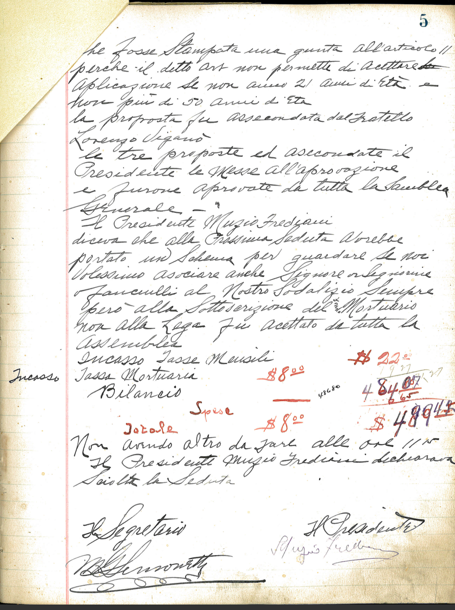
Lega Toscana di Protezione
Seduta regolare Ordinaria 18 Febbraio 1919
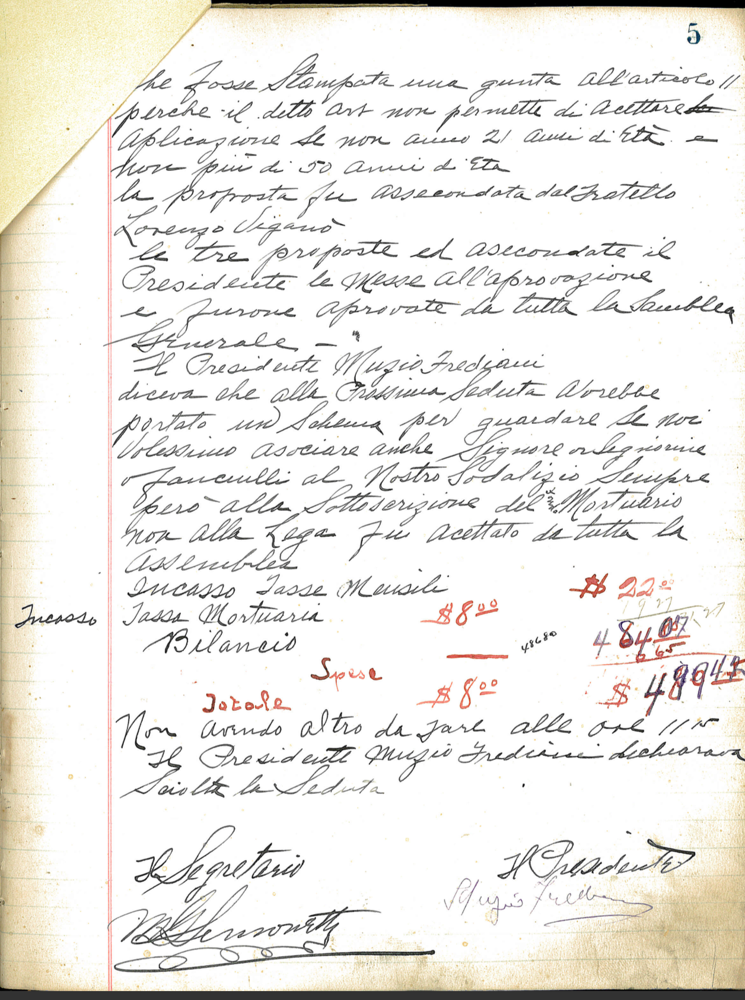
Lega Toscana di Protezione
Seduta regolare Ordinaria 18 Febbraio 1919
Alle Ore 930 P.M. Il Presidente M.
Frediani
dichiarava la Seduta aperta.
quindi Ordinò L’Appello Nominale
dell’aministra-
-zione e Risultavano Assenti i Seguenti
ufficiali
a Curatori
Carlo Silvione
Eugenio Bertoni
ufficiale
Sanitari Eugenio
Merciadri
guardia Sala A Fontana
Si venne alla Lettura Precesso Verbale il
quale Venne aprovato
Come e Scritto
Il Risultato del Fratello
Maffei e il fratello
Simonetti
Icaricati di fare il Conto Con il fratello
Serafini in riguardo ai Piatti
il fratello
G Serafini Pagò la Soma
di $5.00 i quali
Anderanno a fondo del Sodalizio
Billi che furano Pagati
in Seduta Stante
Stampa $4.50 un Libro Per Precessi Verbal
$2.15 Totale
$6.65/100
quindi Si Passo alla disculzione in riguardo
A una Nuova
Amistia dopo una Lunga
disculzione
Il Fratello S Maffei
fece la
proposta di fare una Mistia la proposta del
Fratello S Maffei fu asecondata dal Fratello E Benedetto
Il Fratello Abramo Marsili fece una Proposta che
in questa
Mistia non fossero amessi i Foreoni
più che Oltrapassano 35 anni di Età e non
più
giovani di 18 anni di Età
e che tutti fossero Messi a Pagamento di
$1.00
la Proposta del Fratello abramo
Marsili
fu assecondata dal Fratello Giovacchino Maffei
Il Fratello Stefano Maffei Fece la Proposta
che fosse Stampata una gunta all’articolo 11
perche il detto
art non permette di acettare
aplicazione Se non anno 21 anni di Età e
non più di 50 anni di Eta
la proposta fu assecondata dal Fratello
Lorenzo
Viganò
le tre proposte ed asecondate il
Presidente le Messe all’aprovazione
e furone aprovate da
tutta la Samblea
Generale –
Il Presidente Muzio Frediani
diceva che
alla Prossima Seduta Avrebbe
portato un Schema per guardare Se noi
Volessimo asociare anche Signore o Signorine
Fanciulli al Nostro Sodalizio
Sempre
però alla Sottoscrizione del Fondo Mortuario
non alla Lega fu
acettato da tutta la
Assemblea
Incasso Tasse Mensili $22.00
Incasso
Tasso Mortuaria $8.00
Bilancio $499.42
Spese Totale $8.00
Non Avendo altro da Fare alle ore 11:15
Il Presidente Muzio Frediani
dichiarava
Sciolta la Seduta
Il Segretario Il Presidente M.G.
Simonetti
Muzio Frediani
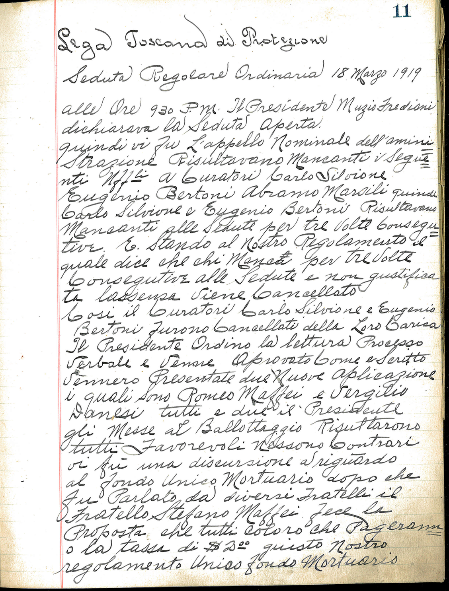
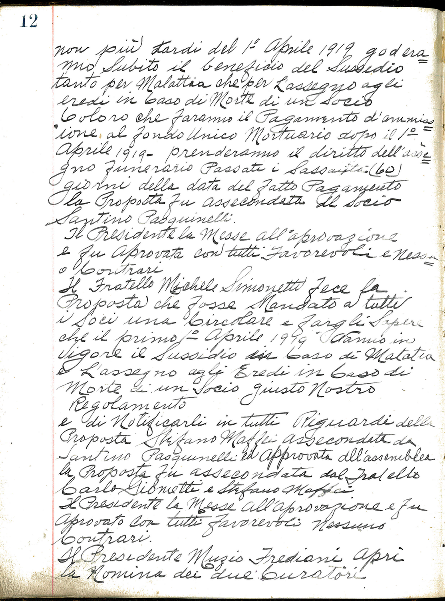
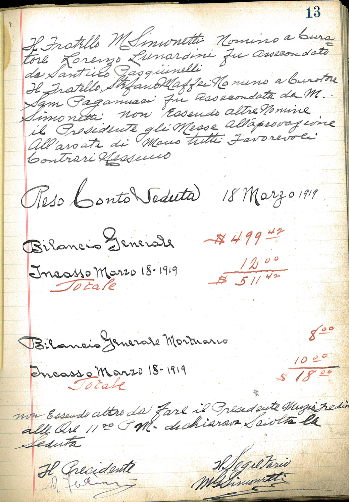
Lega Toscana di Protezione
Seduta Regolare Ordinaria 18 Marzo 1919
Alle Ore 930 P.M. Il Presidente Muzio
Frediani
dichiarava la Seduta Aperta.
quindi vi fu L’appello Nominale dell’amini-
Strazione Risultavano
Mancanti i Segue-
nti Uffli a Curatori
Carlo Silvione
Eugenio Bertoni
Abramo Marsili
quindi
Carlo Silvione e Eugenio BertoniRisultavano
Mancanti alle Sedute per tre Volte Consegu-
tive E Stando al Nostro
Regolamento il
quale dice che chi Manca per tre volte
Consegutive alle
Sedute e non gustifica
ta lassenza viene Cancellato
Cosi il Curatori
Carlo Silvione e Eugenio
Bertoni furono Cancellati della Loro Carica
Il Presidente Ordino la lettura Processo
Verbale e
venne aprovato Come e Scritto
Vennero Presentate due Nuove Aplicazione
i quali Sono
Romeo Maffei
e Vergilio
Danesi
tutti e due il Presidente
gli Messe al
Ballottaggio Risultarono
tutti Favorevoli nessono Contrari
vi fu’ una discursione al riguardo
al Fondo Unico Mortuario dopo che
Fu Parlato da diversi
Fratelli il
Fratello Stefano
Maffei fece la
Proposta che tutti coloro che
Pageravan-
o la tassa di $2.00 giusto Nostro
regolamento Unico Fondo Mortuario
non più tardi del 1o Aprile 1919 godera-
nno Subito il
beneficio del Sussidio
tanto per Malattia che per L’assegno agli
eredi in Caso di Morte di un Socio
Coloro che faranno il Pagamento
d’ammiss-
ione al Fondo Unico Mortuario dopo il 1o
Aprile 1919-
prenderanno il diritto dell’asse-
gno funerario Passati i Sassanta
(60)
Giorni della data del Fatto Pagamento
la Proposta fu assecondata
dl Socio
Santino
Pasquinelli.
Il Presidente la Messe all’aprovazione
e fu
Aprovata con tutti Favorevoli e Nessun-
o Contrari
Il Fratello Michele Simonetti Fece la
Proposta che Fosse Mandato a tutti
i Soci una Circolare e Fargli
Sapere
che il primo 1o Aprile 1919 danno in
vigore il Sussidio in
Caso di Malatia
e L’assegno agli Eredi in Caso di
Morte di un Socio
giusto Nostro
Regolamento
e di Notificarli in tutti Riguardi
della
Proposta Stefano Maffei
assecondata da
Santino Pasquinelli ed approvata
all’assemblea
la Proposta fu assecondata dal Fratello
Carlo Giometti e Stefano Maffei
Il Presidente la Messe all’aprovazione e fu
aprovato con tutti favorevoli nessuno
Contrari.
Il Presidente Muzio Frediani aprì
la
Nomina dei due Curatori
Il Fratello M Simonetti Nomino a Cura-
tore Lorenzo Lunardini
fu assecondato
da Santino
Pasquinelli
Il Fratello Stefano Maffei Nomino a Curatore
Sam Paganucci fu
assecondata da M.
Simonetti non
Essendo altre Nomine
il Presidente gli Messe all’aprovazione
All’arsata
di Mano tutti Favorevoli
Contrari Nessuno
Reso Conto Seduta 18 Marzo
1919
Bilancio Generale $499.42
Incasso Marzo 18-1919 $12.00
Totale
$511.42
Bilancio Generale Mortuario $8.00
Incasso Marzo 18-1919
$10.00
Totale $18.00
non Essendo altro da Fare il Presidente Muzio
Frediani
alle Ore 11:20 PM. dichiarava Sciolta la
Seduta
Il Presidente Il Segretario
M Frediani
M Simonetti
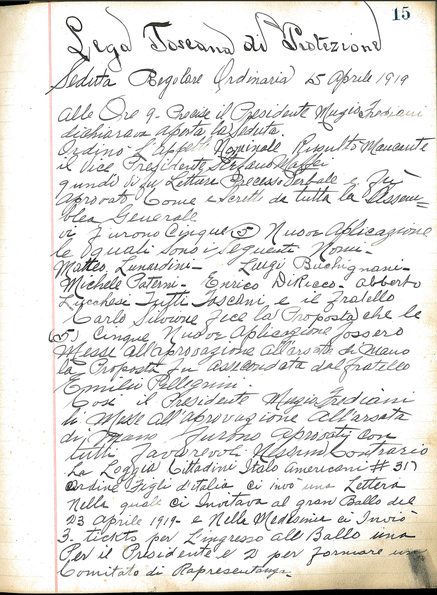
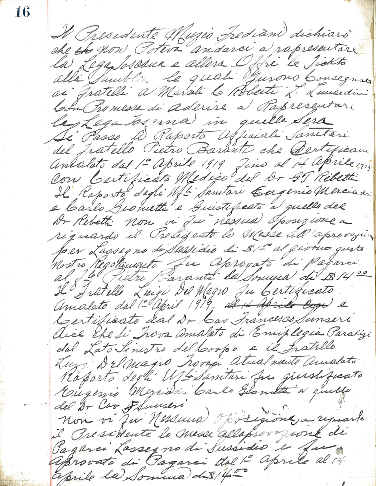
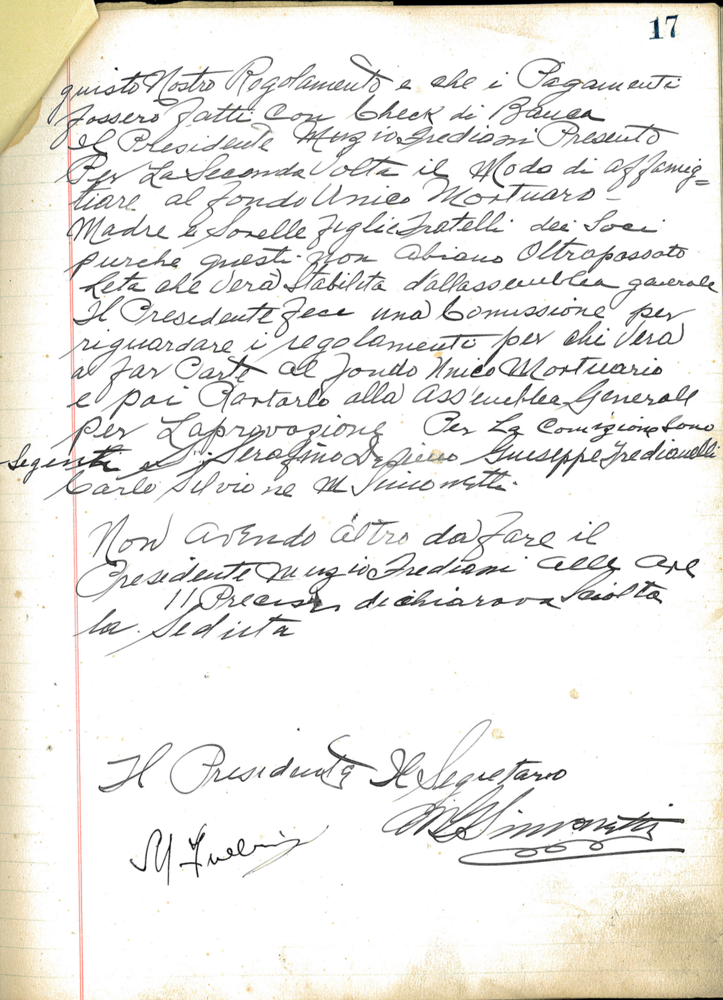
Lega Toscana di Protezione
Seduta Regolare Ordinaria 15 Aprile 1919
Alle Ore 9 – Preciseil Presidente Muzio
Frediani
dichiarava aperta la Seduta.
Ordinò l’appello Nominale Risultò Mancante
il Vice Presidente Stefano
Maffei
quindi vi fu Lettere Precesso Verbale e fu
approvato Come è
Scritto da tutta la Assem
blea Generale
vi furono Cinque (5) Nuove Aplicazione
le quali Sono i seguenti
Nomi-
Matteo Lunardini-
Luigi Buchignani-
Michele Paterni-
Enrico DiRicco-
Alberto
Lucchese
Tutti Toscani e il fratello
Carlo Silvionefece la
Proposta che le
(5) Cinque Nuove Aplicazione fossero
messe
all’aprovazione all’arsata di mano
la Proposta fu assecondata
dal fratello Emilio
Pellegrini.
Cosiil Presidente
Muzio Frediani
Li Messe all’aprovazione all’arsata
di
Mano Furono aprovati con
tutti Favorevole. Nessun Contrario
la
Loggia Cittadini Italo americani #31
ordine'Figli d’italia ci inviò una
lettera
nelle quale ci Invitava al Gran Ballo del
23 Aprile 1919 – e Nella
Medesimia ci Inviò
3. ticket per L’ingresso all Ballo una
Per il
Presidente e 2 per formare una
Comitato di Rapresentanza.-
Il Presidente Muzio
Fredianidichiarò
Chechnon Poteva
andarci a rapresentare
La Lega Toscanae allora Offri le Tickets
alla
Samblea. le quali furono Consegnate
ai fratelliA.
Marsili
C. Robert
L. Lunardini
Con Promessa di aderire a
Rapresentare
la Lega Toscanain quella Sera
Si Passo a Raporto Ufficiali Sanitari
Del
fratello Pietro Barantiche certificano
amalato dal 1o Aprile
1919 fino al 14 Aprile 1919
Con Certificato MedicoDel Dr. G.T. Ribetti
Il Raporto degli Ufli. Sanitari
Eugenio Merciadri
e Carlo Giomettie’ Giustificato a quello
del Dr. Ribettinon vi fu nessuna
oposizione a
riguardo ilPresidentelo messe
all’approvazione
per Lassegno di Sussidio di $1.00 al giorno
questo
Nostro Regolamento fu aprovato di pagarci
Al flo Pietro Barantila Somma di $14.00
Il
fratello Luigi Del Magro fu certificato
amalato dal 1o Aprile
1919all 14 Aprile Cone
Certificatodal Dr Cav Francesco Sunseri
dice che Si
Trova amalato di Emiplegia paralizi
dal lato sinistro del Corpo e il fratello
LuigiDel Magro Trovarsi
atualmente amalato
Raporto degli Ufli Sanitari Fu giustificato
Eugenio Merciadri
Carlo Giomettia quelle
del Dr Cav. F. Sunseri
Non vi fu
Nessuna oposizione a riguardo
IlPresidentelo
messe allaprovazione di
Pagarci Lassegno di Sussidio e fu
Aprovato di
Pagarci dal 1oAprile al 14
Aprile la Somma di $14.00
quisto Nostro Regolamento e che i Pagamenti
Fossero Fatti con
Check di Banca
il Presidente Muzio Frediani
Presento
Per La Seconda Volta il Modo di affamig
liare al Fondo Unico
Mortuaro –
Madre e Sorelle Figli e Fratelli dei Soci
purche questi non
Abiano Oltrapassato
Leta che Verà Stabilta d’allassemblea generale
Il PresidenteFece una Comissione
per
riguardare i regolamenti per chi Vera
a Far Parte al Fondo Unico
Mortuario
e poi Portarlo alla Assemblea Generale
per Laprovazione
Per la Comizione Sono
Seguenti
Serafino DeSimo
Gueseppe Fredianelli
Carlo Silvione
M Simonetti
Non Avendo Altro da Fareil
Presidente
Muzio Fredianialle Ore
11 Precise dichiarava sciolta
La
Seduta
Il Presidente Il Segretario
M Frediani
M Simonetti
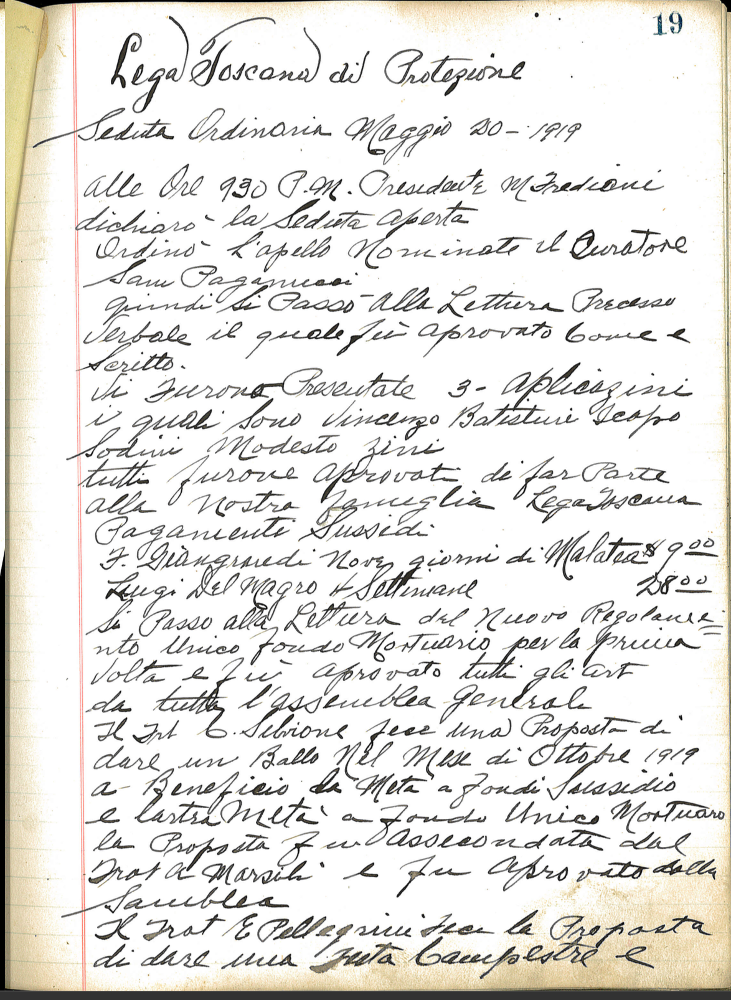
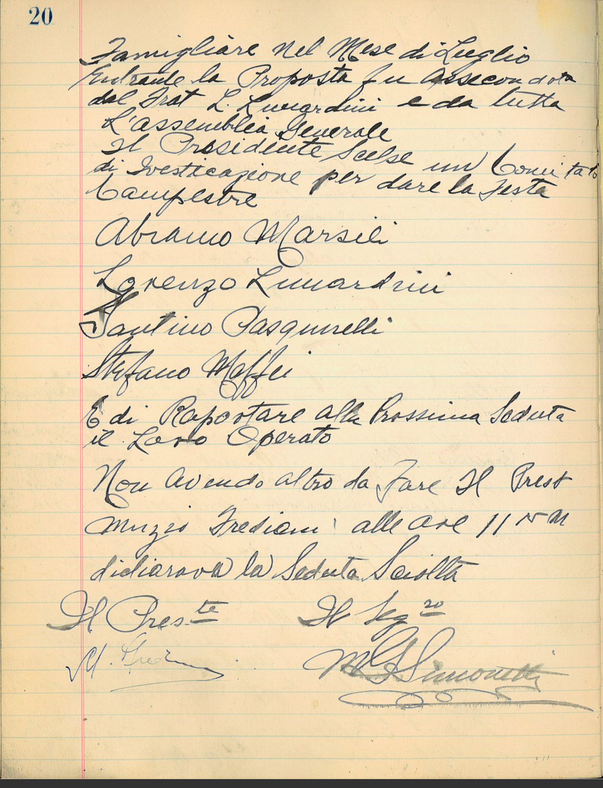
La Lega Toscana di Protezione
Seduta Ordinaria maggio 20 - 1919
Alle ore 930 P.M.Presidente M
Frediani
dichiarò la Seduta Aperta
Ordinò L’apello Nominato il Curatore
Sam Paganucci
quindi Si Passò Alla
Lettura Precessa
Verbale il quale Fui aprovato Come e
Scritto.
Vi Furono Presentate 3 -- Aplicazini
i quali Sono
Vincenzo Battistini
Jeapo
Sodini
Modesto Zini
tutti furore aprovati di far Parte
Alla Nostra Famiglia Lega
Toscana
Pagamenti Sussidi
F. Giangranedi Nove giorni di
Malatea $9.00
Luigi Del
Magro il Settimane 28.00
Si Passo alla Lettura del Nuovo Regolame
Nto Unico
Fondo Mortuario per la prima
Volta e Fuì aprovato tutti gli art
Da tutta
l’assemblea Generale
Il Frt C.SilvioneFece una Proposta di
dare un Ballo Nel Mese
di Ottobre 1919
a Beneficio da Meta a Fondi Sussidio
e lartra Metà a
Fondo Unico Morturaro
la Proposta Fu Assecondata dal
Frat A Marsilie fu
aprovato dalla
Samblea
Il Frat E PellegriniFece la Proposta
di dare una Festa
Campestre e
Famigliare Nel Mese di Luglio
Entrante la Proposta fu Assecondata
dal Frat L. Lundardinie
da tutta
L’assemblea
Generale
Il PresidenteScelse un Comitato
di
Ivesticazione per dare la Festa
Campestre
Abramo
Marsili
Lorenzo
Lunardini
Santino
Pasquinelli
Stefano Maffei
E di Raportare alla Prossima Seduta
il Loro Operato
Non Avendo altro da Fare Il
Prest
Muzio Frediani alle ore 11 pm
dichiarava la Seduta
Sciolta
Il Preste Il Segno M. Frediani
M. Simonetti
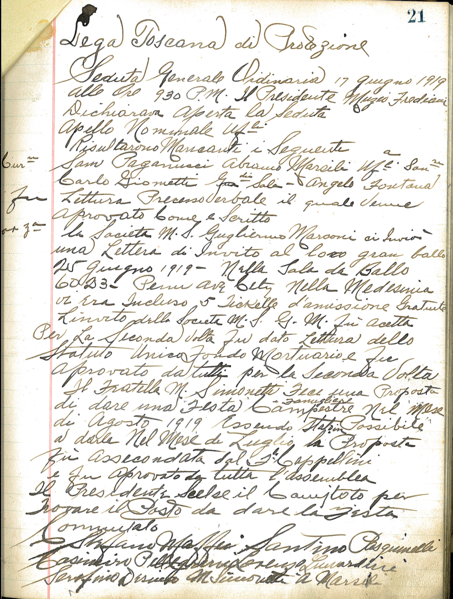
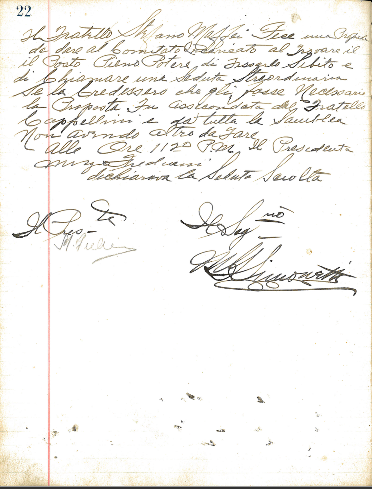
Lega Toscana di Protezione
Seduta Generale Ordinario 17 giugno 1919
Alle Ore 930 P.M.Il presidente Muzio
Frediani
Dichiarava aperta la Seduta
Apello Nominale ufle
Risultarono Mancanti i Seguenti
Curre
Sam Paganucci
Abramo Marsili
ufle Sanro
Carlo
Giometti
Guadia Sala - Angelo Fontana
FuLettura Processo Verbale il quale Venne
aprovato
Come e Scritto
anza la Societa M. S. Gugliermo Marconi ci Invio’ una Lettera
di Invito al loro gran ballo
25 giugno 1919 - Nella Sala da Ballo 6023 - Penn ava
city Nella Medesima
vi era Incluso 5 Tickette d’amissione Gratuite
Linvito
della Societa M. S. G. M. Fu’ acetta
Per La Seconda volta Fu dato Lettura
dello
Statuto Unica Fondo Mortuario e Fu
aprovato da tutti per la Seconda Volta
Il Fratello M.Simonetti Fece una Proposta
di dare una Festa
Campestre Famigliare Nel Mese
di Agosto 1919 Essendo stato
inPossibile
a darla Nel Mese di Luglio la Proposta
Fu’
assecondatadal Flo
Cappellini
e Fu aprovato da tutta l’assemblea
Il PresidenteScelse il Comitoto
per
Trovare il Posto da dare la festa
Commitato
Stefano Maffei
Santino Pasquinelli
Casimiro Pellegrini
Lorenzo Lunardini
Serafino DeSimo
M Simonetti
A Marsili
Il Fratello Stefano Maffei Fece una proposta
da dare al
comitato incaricato al trovare il
il Posto Pieno Potere di Fissarlo Sibito
e
di Chiamare una Seduta Straordinaria
Se la Credessero che gli Fosse
Necessario
la Proposta Fu assecondata dal Fratello
Cappellini e da tutta la
Samblea
Non avendo altro da Fare
Alle ore 1120 P.M.
Il Presidente
Muzio
Frediani
dichiarava la Seduta Sciolta
Il PresteIl
SegrioM. Frediani
M. Simonetti
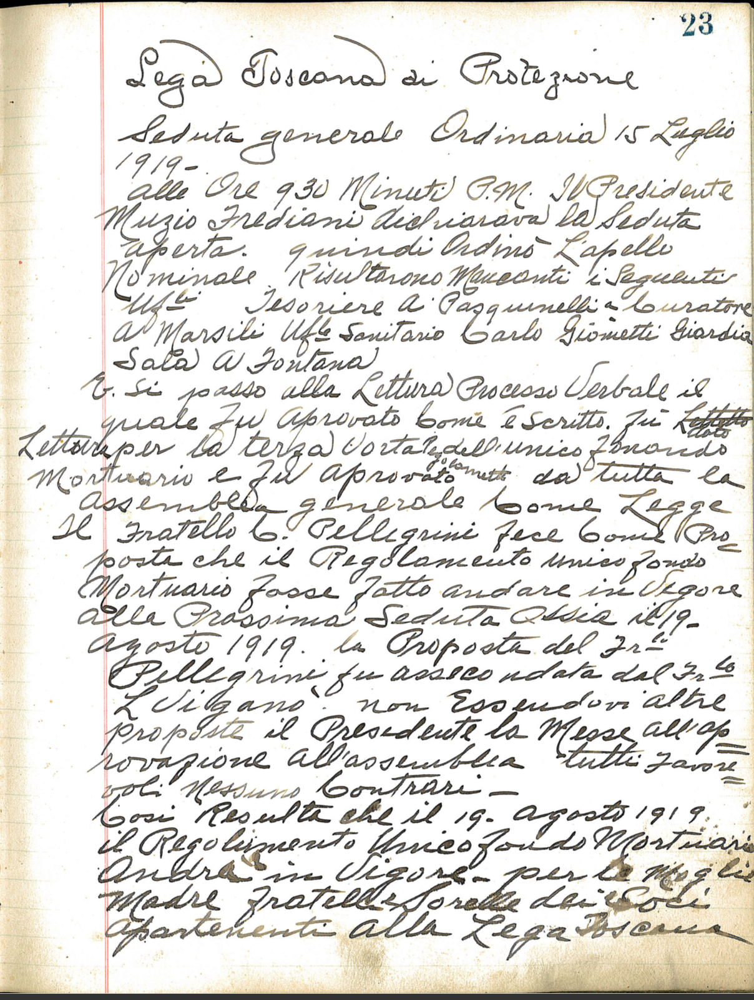
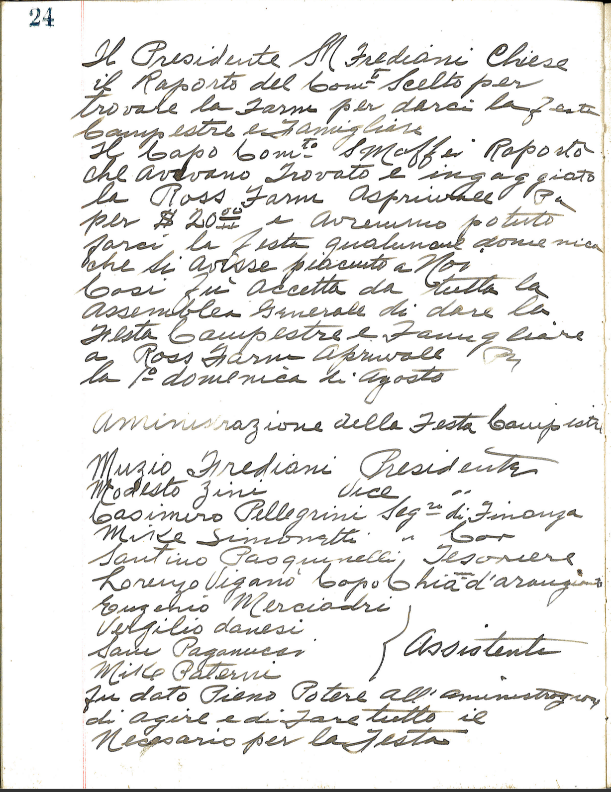
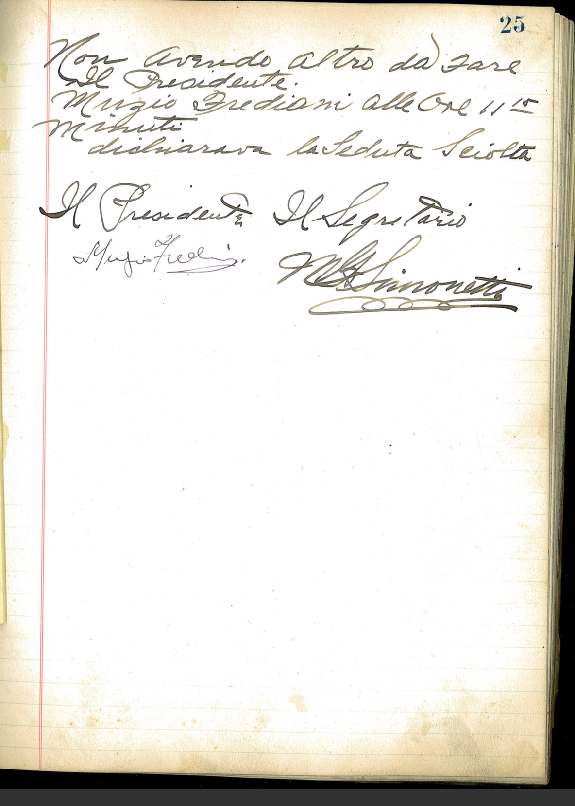
Lega Toscana di Protezione
Seduta generale Ordinaria 15 Luglio 1919 -
alle Ore 930 Minuti P.M.Il
Presidente
Muzio Fredianidichiarava la Seduta
aperta. quindi
Ordino’ L’apello
Nominale. Risultarono Mancanti i
Seguenti
Ufli
Tesoriere A. Pasquinelli
a curatore
a Marsili
ufle Sanitario Carlo Giometti
Guardia
Sala Fontana
E. Si passo alla Lettura Processo Verbale il
quale Fu aprovato
come e’ scritto. Fu’Lettettodato
Lettura per la terza
vorta Regolamento dell’unico Fondo
Mortuario e Fu aprovato da tutta
la
assemblea generale come Legge
Il Fratello C.Pellegrini fece Come pro
poste
che il Regolamento unico fondo
Mortuario fosse fatto andare in
Vigore
alla Prossima Seduta Ossia il 19
agosto 1919. La Proposta del
Frlo
Pelligrini fu assecondata
dal Frlo
L Vigano’.Non Essendovi altre
proposte il Presidente la Messe all’ap
rovazione
all’assemblea tutti favore
voli Nessuno Contrari--
Cosi Resulta
che il 19 agosto 1919
il Regolamento Unico fondo Mortuario
Andra’ in
Vigore per le Moglie
Madre fratelli Sorelle dei Soci
Apartenenti Alla Lega Toscana
Il Presidente M FredianiChiese
il
Raporto del Comto Scelto per
trovare la farm per darci la festa
Campestre
e Famigliare
Il Capo Comto S MaffeiRaporto
che avevano
trovato e ingaggiato
la Ross Farm Aspinwall Pa
per $20.00 e avremmo
potuto
farci la festa qualunque domenica
che Si avesse piaciuto a
Noi
Cosi fu’ accetta da tutta la
Assemblea Generale di dare la
Festa
Campestre e Famigliare
a Ross Farm Aspinwall Pa
la 1a domenica di
agosto
Aministrazione della Festa Campestre
Muzio Frediani
Presidente
Modesto ZiniVice
Casimiro PelligriniSegrodi Finanza
Mike Simonetti^ Cor.
Santino PasquinelliTesoriere
Lorenzo Vigano’CapoChia d’arangiomento
Assistenti
Eugenio Merciadri
Vergilio danesi
Sam Paganucci
Mike Paterni
Fu dato Pieno Potere all’aministrazione
di agire e di fare tutto
il
Necessario per la festa
Non Avendo Altro da Fare
Il
Presidente
Muzio Frediani Alle Ore
11:15
Minuti
Dichiarava la Seduta Sciolta
Il Presidente Il
Segretario Muzio Frediani
M G Simonetti
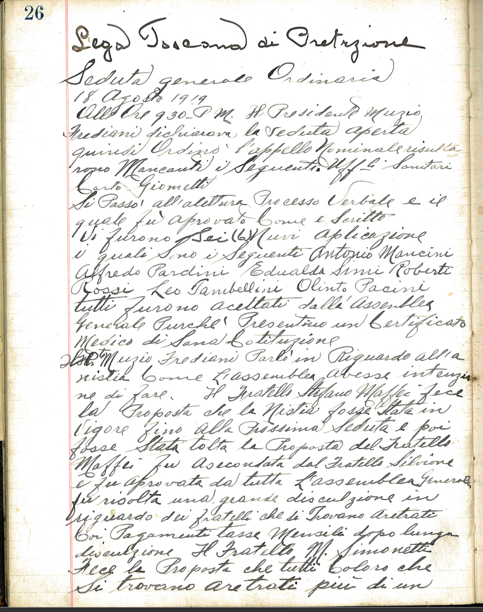
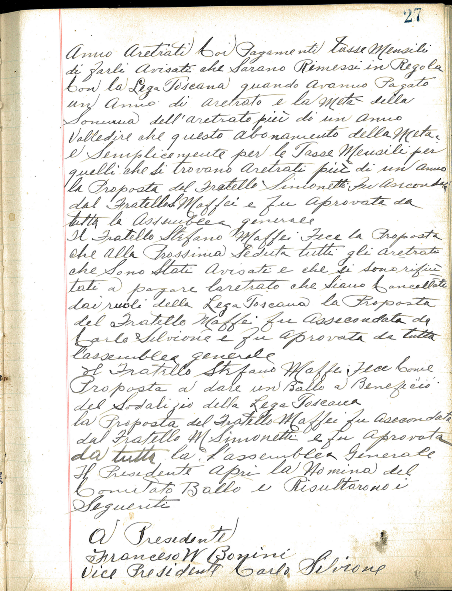
 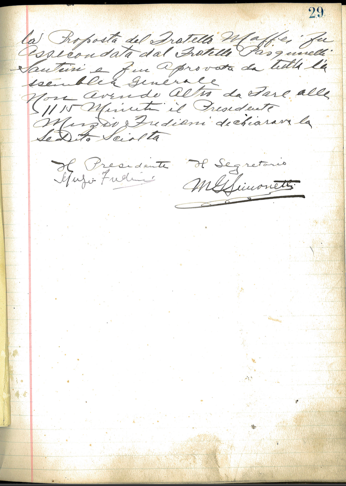
Lega Toscana di Protezione
Seduta generale Ordinaria
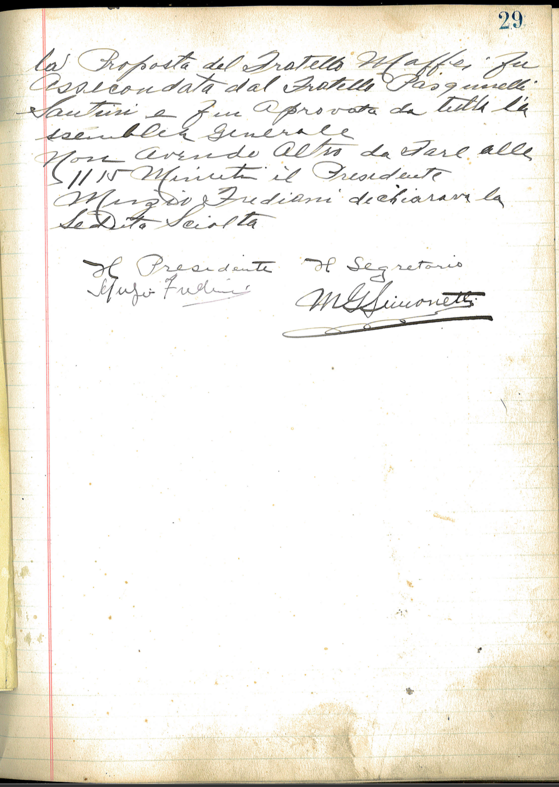
Lega Toscana di Protezione
Seduta generale Ordinaria
Alle Ore 930 PMPresidente Muzio
Fredianidichiarava la Seduta Aperta
quindi Ordinò l’appello Nominale
risulta
sono Mancanti I Seguenti
Uffli Sanitari
Carlo Giometti
Si Passo’ all’alettura Processo Verbale e
il quale fù aprovato
Come e Scritto
Vi furono Sei (6) Nuvi Aplicazione
i quali Sono i Seguenti
Antonio Mancini
Alfredo Pardini
Edualda Simi
Roberti
Rossi
Leo Tambellini
Olindo Pacini
tutti furono acettati dalla’Assemblea
Generale Purchè Presentino un
Certificato
Medico di Sana Cotituzione
Il Prte Muzio Fredianiparlo’ in Riguardo
alla
Nistia come l’assemblea avesse intenzio
ne di fare.Il
fratello Stefano Maffeifece
la Proposta che la Nistia fosse
stata in
Vigore fino alla prossima seduta e poi
Fosse stata tolta la
Proposta del Fratello
Maffei Fu Asecondatadal Fratello Silvione
È fu aprovata da
tutta L’’assemblea Generale
Fu risolta una grande disculzione
in
riguardo dei fratelli che si Trovano Aretrati
Coi Pagamenti tasse
Mensili dopo lunga
DisculzioneIl Fratello M.
Simonetti
Fece la Proposta che tutti Coloro che
Si
trovano aretrati piu’ di un
Anno Aretrati Coi Pagamenti tasse Mensili
di Farli Avisati che
Sarano Rimessi in Regola
Con la Lega Toscana quando avanno Pagato
Un
anno di aretrato e la Meta’ della
Somma dell’aretrato piu di un anno
Valledire che questo abonamento della Meta
e semplicemente per le Tasse
Mensili per
quelli che si trovano Aretrati piu’ di un Anno
la Proposta
del Fratello Simonetti fu
asecondatadal Fratello Maffeie fu aprovata da
tutta la
Assemblea generale
Il Fratello Stefano Maffeifece la Proposta
che alla Prossima Seduta tutti gli aretrati
che Sono Stati Avisati e che si
sono rifiu
tati a pagare laretrato che Siano Cancellati
dai ruoli
della Lega Toscana la Proposta
del fratello Maffei fu Assecondata da
Carlo Silvioneè fu
aprovata da tutta
l’assemblea generale
Il
fratello Stefano Maffeifece Come
Proposta a dare un Ballo a
Beneficio
del Sodalizio della Lega Toscana
la Proposta del Fratello
Maffei fu asecondata
dal Fratello Simonettie
fu aprovata
da tutta la l’assemblea generale
Il Presidente apri la Nomina del
Comitato
Ballo e Resultarono i
Seguenti
A
Presidente
Francesco
Bonini
Vice
PresidenteCarlo
Silvione
Secondo Vice
PresidenteJeapo
Sodini
Segretario di
CorMuzio Frediani
Asistente
SegretarioCasimiro
Pellegrini
TesoriereSerafino DeSimo
Comitato di Ricevimento
Eugenio Bertoni
Castruccio Cappellini
Giuseppe Tambellini
Orlando Serafini
Abramo Marsili
Manegere della Sala da Balli
Michele Simonetti
Lorenzo Lunardini
Lorenzo Vigano
Ugo Pistelli
Chiarma d’arangiomento
Stefano Maffei
Giuseppe Fredianelli
Sam Paganucci
Modesto Zini
Eugenio Merciadri
Enrico DiRicco
Carlo Giometti
Americo Pasquinelli
Francesco Giangranedi
Santino Pasquinelli
Il Fratello Stefano Maffei fece
Come Proposta di dare Pieno
Potere
al Comitato di Agire per il Ballo
la Proposta del Fratello Maffei fu
Assecondata dal Fratello
Pasquinelli
Santini e fu aprovata da tutti l’a
ssemblea
Generale
Non avendo altro da Fare alle
1115 Minuti il Presidente
Muzio Frediani dichiarava la
Seduta
Sciolta
Il Presidente Il Segretario Muzio Frediani
M. S. Simonetti
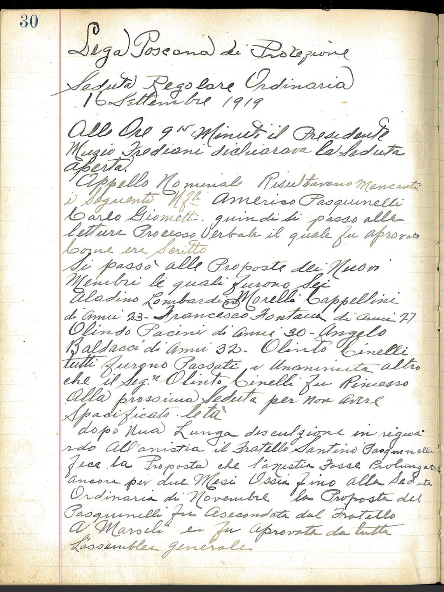
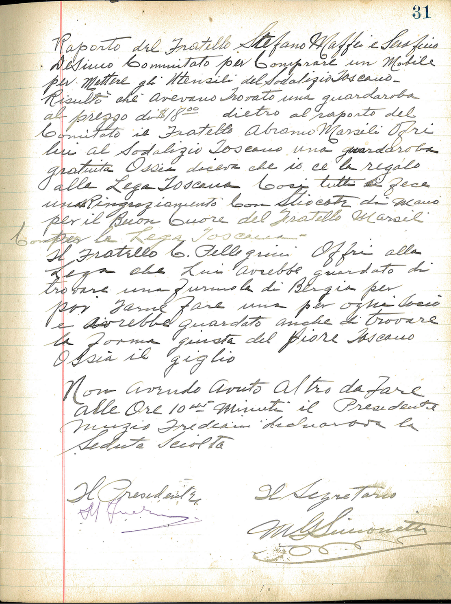
Lega Toscana di Protezione
Seduta Regolare Ordinaria
Alle Ore 9:15 Minuti il Presidente
Muzio Frediani dichiarava la Seduta
aperta.
Appello Nominale Risultavano Mancanti
i Seguenti Uffli
Americo Pasquinelli
Carlo Giometti
. quindi si passo alle
lettura Processo Verbale il quale fu
aprovato
Come era Scritto
Si passo’ alle Proposte dei Nuovi
Membri le quali furono Sei
Aladino Lombardi
Morello Cappellini
di Anni
23-
Francesco Fontana di anni 27
Olindo Pacini di anni 30-
Angelo
Baldacci di anni 32-
Olinto
Cinelli
tutti furono Passati a unanimita altro
che il Sig. Olinto Cinelli fu Rincesso
Alla prossima Seduta
per non avre
Spacificato leta’
dopo Una Lunga disculzione in rigua
rdo all’anistia il fratello
Santino Pasquinelli
fece la Proposta che l’anistia fosse
prolungata
ancora per due Mesi Ossia fino alla Seduta
Ordinaria di
Novembre la Proposta del
Pasquinelli fu asecondata dal fratello
A Marsili e fu aprovata
da tutta
L’assemblea generale
Raporto del fratello Stefano
Maffei e Serafino
DeSimo
Commitato per Comprare un Mobile
per Mettere gli Utensili del Sodalizio
Toscano.
Risulto’ che avevano Trovato una guardaroba
al prezzo di $18.00
dietro al raporto del
Comitato il Fratello Abramo
Marsili Ofri
lui al Sodalizio Toscano una guardaroba
gratuita Ossia diceva che io ce la regalo
alla Lega Toscana Cosi tutto li
fece
un Ringraziamento Con stiocate di Mano
per il Buon Cuore del Fratello Marsili
per la Lega Toscana.
Il Fratello C. Pellegrini Offri alla
Lega che Lui avrebbe guardato di
trovare una furmola di Bergia per
poi
farne fare una per ogni Socio
e avrebbe guardato anche di trovare
la
forma giusta del fiore Toscano
Ossia il giglio
Non avendo Avuto Altro da Fare
alle Ore 1015 Minuti il Presidente
Muzio Frediani dichiarava
la
Seduta Sciolta
Il Presidente Il Segretario
M. Frediani
M. Simonetti
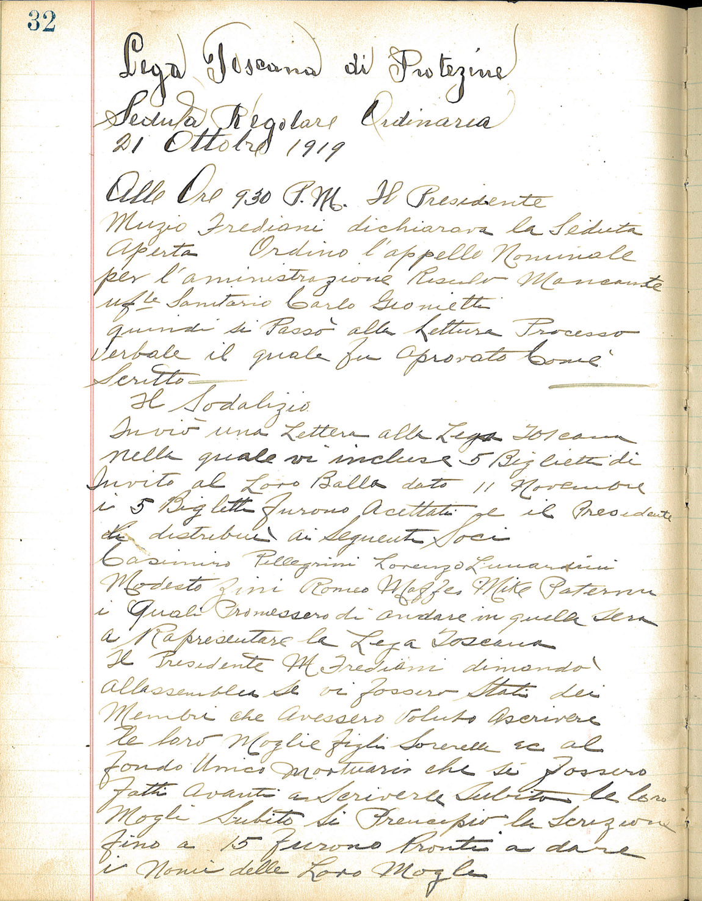
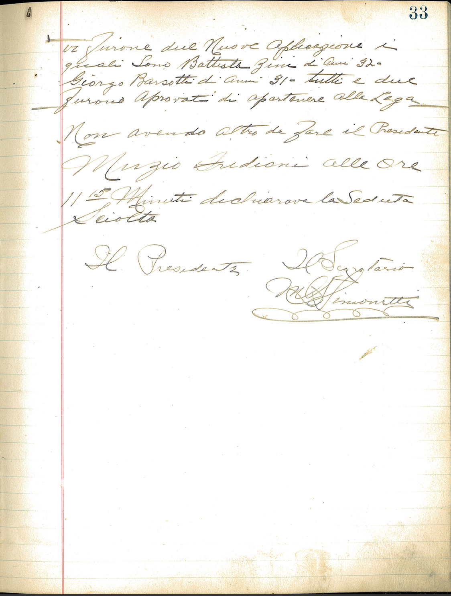
Lega Toscana di Protezione
Seduta Regolare Ordinaria
Alle Ore 9:30 P.M. Il Presidente
Muzio Frediani dichiarava la Seduta
Aperta
Ordino l’appello Nominale
per l’aministrazione Resulto
Mancante
ufle Sanitario Carlo
Giometti
quindi si Passo’ alla Lettura Processo
verbale il quale fu
aprovato Come’
Scritto
Il Sodalizio
Invio’ una lettura alla Lega
Toscana
Nella quale vi incluse 5 Biglietti di
Invito al Loro Balla dato
11 Novembre
i 5 biglietti furono acettati e il
Presidente
li distribrui’ ai Seguenta Soci
Casimiro Pelligrini
Lorenzo Lunardini
Modesto Zini
Romeo Maffei
Mike Paterni
i quali promessero di
andare in quella sera
a Rapresentare la Lega
Toscana
Il Presidente M Frediani dimando’
Allassemblea Se vi fossero Stati dei
Membri che avessero voluto
ascrivere
le loro Moglie figli Sorelle ec al
fondo Unico Mortuario che
si fossero
fatti avanti a Scriverle Subito le loro
Mogli Subito si
Preucipio la Scrizione
fino a 15 furono Pronti a dare
i Nomi delle Loro Mogli
vi Furone due Nuove aplicazione i
quali sono
Battista Zini di anni 32-
Giorgo Barsotti di anni 31-
tutti e due
Furono aprovati di apartenere alla Lega
Non avendo altro da fare il Presidente
Muzio Frediani alle ore
1115 Minuti dichiarava la
Seduta
Sciolta
Il Presidente Il Segretario
M.Simonetti
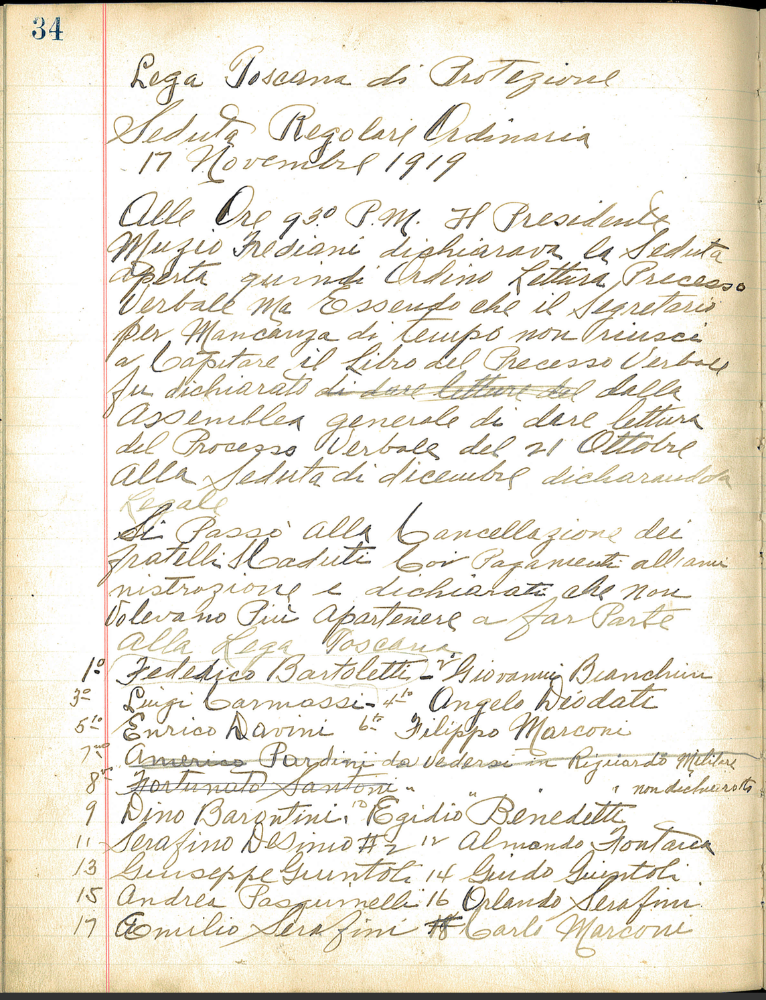
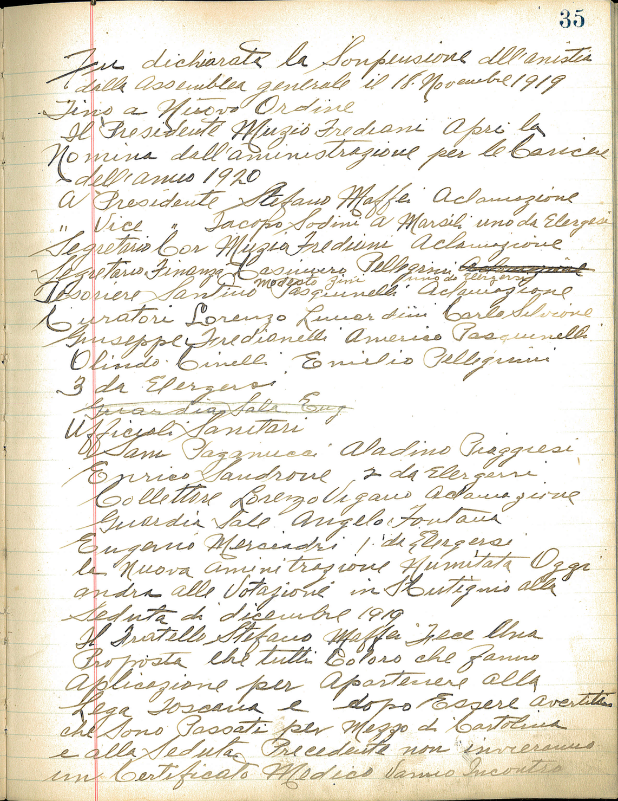
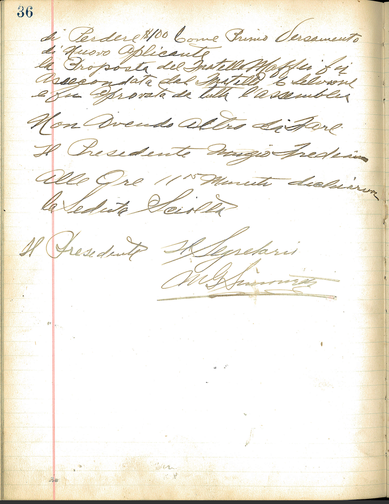
Lega Toscana di Protezione
Seduta Regolare Ordinaria
Alle Ore 9:30 P.M. Il Presidente
Muzio Frediani dichiarava la Seduta
aperta quindi Ordino
Lettura Precesso
Verbale Ma Essendo che il Segretario
per Mancanza di
tempo non riusci
a Capitare il libro del processo Verbale
Fu dichiarato
di dare lettere del dalla
Assemblea generale di
dare lettura
del Processo Verbale del 21 Ottobre
Alla Seduta di dicembre
dichiarandola
Legale
Si Passo’ alla Cancellazione dei
Fratelli SCaduti Con Pagamenti
all’ami
nistrazione e dichiarati che non
Volevano Piu’ apartenere
a far Parte
Alla Lega Toscana
1o Federico Bartoletti
- 2o Giovanni Bianchini
3o Luigi Carmassi
- 4to Angelo Diodati
5to Enrico Davini
6to Filippo Marconi
7mo Americo Pardini da vedersi in Riguardo Militare
8mo Fortunato Santorini
" " " non dichiarata
9 Dino Barontini,
10 Egidio Benedetti
11 Serafino DeSimo
12 Almando Fontana
13 Giuseppe Giuntoli
14 Guido Giuntoli
15 Andrea Pasquinelli
16 Orlando Serafini
17 Amilio Serafini
18 Carlo Marconi
Fu dichiarata la Sospensione dell’anistia
della assemblea
generale il 18 Novembre 1919
fino a nuovo ordine
Il Presidente Muzio Frediani apri la
Nomina dall’amministrazione per le Cariche
dell’anno 1920
A Presidente
Stefano Maffei aclamazione
“vice”
Jacopo Sodini
A Marsili uno da Elergesi
Segretario Cor
Muzio Frediani aclamazione
Segretario Finanza Casimiro Pellegrini
aclamazione
modesto zini uno da elegersi
Tesoriere
Santino Pasquinelli Aclamazione
Curatori Lorenzo Lunardini
Carlo Silvione
Giuseppe Fredianelli
Amerigo Pasquinelli
Olindo Cinelli
Emilio Pellegrini
3 da Elergesi
Guardia Sala Eng
Ufficiali Sanitari
Sam Paganucci
Aladino Piaggesi
Enrico Sandrone 2 da elergesi
Collettore Lorenzo Vigano Aclamazione
Guardia Sala Angelo Fontana
Eugenio Merciadri 1 da elergesi
la
Nuova amministrazione Numinata Oggi
andra alla Votazione in SCutignio alla
Seduta di dicembre 1919
Il fratello Stefano Maffei Fece Una
Proposta
che tutti Coloro che fanno
aplicazione per Apartenere alla
Lega
Toscana e dopo Essere avvertiti
che Sono Passati per Mezzo di
Cartolina
e alla Seduta Precedente non inveranno
un Certificato Medico vanno Incontro
di Perdere $1.00 Come Primo Versamento
di Nuovo
Aplicante
la Proposta del Fratello
Maffei fu
assecondata dal Fratello C. Silvione
e fu aprovata da
tutta l’assemblea
Non Avendo Altro da Fare
Il Presidente Muzio Frediani
Alle
Ore 11:15 Minuti dichiara
la Seduta Sciolta
Il Presidente Il Segretario
M. Simonetti
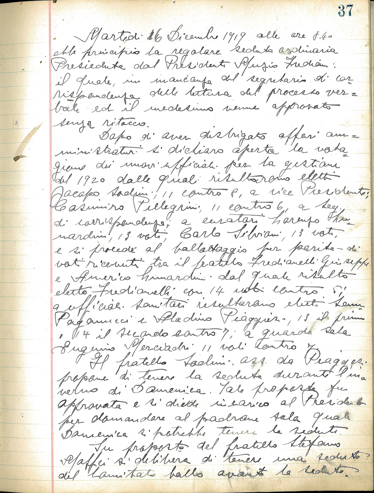
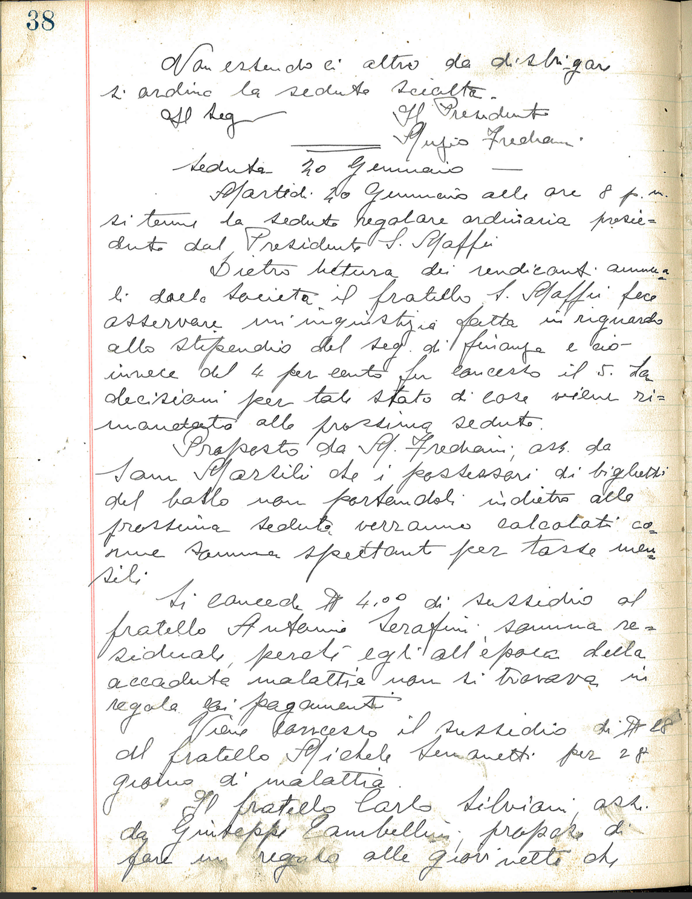
Martedi 16 Dicembre 1919 alle ore 8.40
ebbe principio la
regolare seduta ordinaria
Presieduta dal
Presidente Muzio Frediani:
il quale,
in mancanza
del segretario di cor-
rispondenza
della lettura del processo ver-
bale ed il medesimo venne
approvato
senza ritocco.
Dopo di aver disbrigato affari am-
ministrativi si dichiaro aperta
la vota-
zione dei nuovi ufficiali per la gestione
del 1920 dalle
quali risultarono eletti
Jacopo Sodini, 11 contro 8, a vice
Presidente:
Casimiro Pellegrini, 11 contro 6,
a Seg
di corrispondenza;
a curatori
Lorenzo Lu-
nardini, 13
voti;
Carlo Silvioni, 13
voti,
e si procede al ballottaggio per parita - di
voti ricevuti
tra il fratello Fredianelli
Giuseppe
e Americo
Lunardini dal quale risulto
eletto
Fredianelli con 14 voti
contro 5;
a ufficiali Sanitari risultarono eletti
Sam
Paganucci
e Aladino Piaggiesi
, 13 il primo
e 14 il secondo contro 7;
a guardia sala
Eugenio Merciadri 11 voti contro
7.
Il
fratello Sodini ass. da Piaggesi
propone di tenere la seduta durante l’in-
verno di Domenica. Tale proposta fu
approvata e si diede incarico al Presidente
per domandare al padrone sala
quale
Domenica si potrebbe tenere la seduta.
Fu proposto del
fratello Stefano
Maffei si delibera di tenere una seduta
del comitato
ballo avanti la seduta.
Non essendoci altro da disbrigare
si ordina la seduta sciolta.
Il Seg Il Presidente
Muzio Frediani